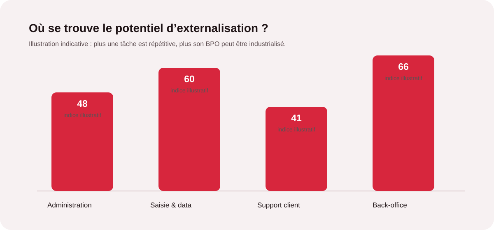
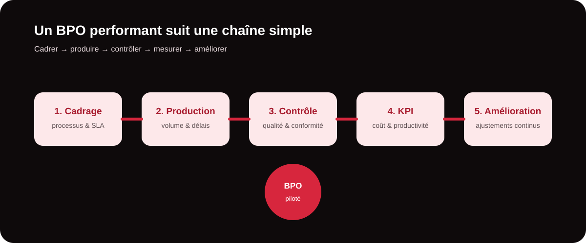

BPO : que peut-on réellement externaliser ?
Le BPO (Business Process Outsourcing) consiste à confier tout ou partie d’un processus métier à un prestataire externe. L’objectif n’est pas de « faire à la place » des équipes, mais de reprendre les opérations répétitives qui consomment du temps sans nécessiter une présence permanente des collaborateurs clés.
Pour une PME, une ETI ou une agence, cela peut concerner la saisie de données, la gestion documentaire, le support de premier niveau, la modération, la qualification de fichiers, le traitement de commandes ou certaines tâches de back-office. Le bon périmètre dépend du volume, du niveau de standardisation, de la confidentialité et du niveau d’expertise attendu.

Comment identifier les bonnes tâches à externaliser ?
Une tâche est généralement un bon candidat lorsqu’elle est fréquente, chronophage, mesurable et documentable. Elle devient encore plus intéressante à externaliser lorsqu’elle mobilise des profils qualifiés alors que la valeur créée réside surtout dans l’exécution et la régularité.
- Répétitive : le processus revient chaque jour ou chaque semaine avec peu de variations.
- Chronophage : elle détourne les équipes commerciales, marketing ou dirigeantes de leurs priorités.
- Standardisable : des règles, consignes et modèles permettent d’obtenir un résultat homogène.
- Mesurable : volume, délai, taux d’erreur, productivité ou qualité peuvent être suivis.

Les tâches BPO les plus pertinentes à confier
| Activité | Exemples de tâches | Bénéfice recherché |
|---|---|---|
| Saisie & data | Enrichissement de bases, saisie, contrôle, dédoublonnage, qualification de données. | Libérer les équipes et améliorer la fiabilité des fichiers. |
| Back-office | Traitement de dossiers, classement, vérifications, reporting, gestion documentaire. | Absorber les volumes sans alourdir l’organisation interne. |
| Support client | Réponses de premier niveau, suivi de demandes, tickets, relances simples. | Maintenir la réactivité tout en concentrant les experts sur les cas complexes. |
| Modération & community support | Tri de commentaires, veille, réponses selon scripts, remontée d’incidents. | Garantir une présence régulière et un traitement rapide. |
| Opérations commerciales | Qualification de leads, mise à jour CRM, préparation de listes, suivi administratif. | Donner plus de temps aux commerciaux pour vendre. |
Saisie, data et gestion documentaire
Les opérations de données sont souvent les premières à externaliser : elles sont volumétriques, répétitives et faciles à encadrer par des règles de contrôle. Une équipe BPO peut par exemple nettoyer une base, enrichir des fiches, vérifier des informations ou préparer des fichiers pour une campagne. Le gain vient surtout de la régularité d’exécution et de la capacité à absorber les pics de charge.
Support et back-office
Le support de premier niveau et les opérations administratives constituent un autre terrain naturel. Les demandes simples peuvent être traitées selon une base de connaissances et des procédures d’escalade. Les collaborateurs internes restent alors concentrés sur les demandes sensibles, la relation stratégique et les décisions qui nécessitent leur expertise.
Vous avez une équipe débordée par le back-office ?
Décrivez-nous les tâches qui prennent le plus de temps. MinoSeo peut vous aider à définir un périmètre BPO réaliste, avec des volumes, des délais et des indicateurs de qualité.
Parler à MinoSeoExternaliser sans perdre le contrôle
Un BPO ne repose pas uniquement sur le volume traité. Il repose sur un cadre de production clair : procédures, responsabilités, délais, règles de confidentialité, contrôle qualité et reporting. Avant le démarrage, il est utile de formaliser un périmètre pilote puis de définir les KPI qui permettront de mesurer la performance.

Quels indicateurs suivre ?
Les KPI doivent rester directement liés au processus. Selon l’activité, on peut suivre le volume traité, le respect des délais, le taux d’erreur, le taux de reprise, la productivité par opérateur, le niveau de service ou encore la satisfaction interne. Ces données permettent d’ajuster les consignes et d’augmenter progressivement le périmètre confié.
La méthode MinoSeo pour un BPO fiable
Avec plus de 15 ans d’expérience, MinoSeo positionne le BPO comme une extension opérationnelle de l’entreprise. La démarche commence par l’analyse des tâches, des volumes et des contraintes, puis se poursuit par la formalisation des procédures et un démarrage progressif. L’objectif est de créer une collaboration durable, transparente et pilotable.
- Cartographier les tâches et repérer les goulots d’étranglement.
- Qualifier ce qui peut être standardisé, documenté et mesuré.
- Piloter un périmètre initial avec des objectifs et des SLA clairs.
- Contrôler la qualité et la conformité avant d’augmenter les volumes.
- Optimiser les processus grâce aux données et aux retours des équipes.

Les erreurs à éviter
Externaliser toutes les tâches sans distinction est une mauvaise stratégie. Il faut éviter de transférer un processus encore mal défini, de choisir uniquement sur le prix, de négliger la sécurité des données ou de démarrer sans indicateurs. Une autre erreur fréquente consiste à externaliser une activité stratégique qui demande une expertise métier profonde sans prévoir le niveau de gouvernance nécessaire.
Le bon BPO libère du temps sans diluer votre expertise
La question n’est donc pas seulement « que peut-on externaliser ? », mais « quelles tâches doivent rester chez nous pour créer de la valeur, et lesquelles peuvent être confiées à un partenaire fiable ? » En ciblant les opérations répétitives, chronophages et mesurables, l’entreprise peut gagner en capacité sans alourdir ses équipes internes.
Pour MinoSeo, l’enjeu est clair : construire un BPO professionnel, flexible et pilotable, capable d’absorber les tâches opérationnelles tout en laissant vos collaborateurs se concentrer sur les activités qui font réellement avancer votre entreprise.
Prêt à identifier les tâches à externaliser ?
Échangeons sur vos volumes, vos contraintes et vos priorités. MinoSeo vous aide à construire un périmètre BPO adapté à votre organisation.
Demander un échange